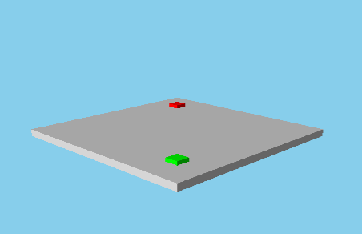

Camera QML Type
Defines an abstract base for Cameras. More...
| Import Statement: | import QtQuick3D |
| Inherits: | |
| Inherited By: |
Properties
- frustumCullingEnabled : bool
- levelOfDetailBias : float
(since 6.5) - lookAtNode : Node
Methods
- vector3d lookAt(vector3d scenePos)
- vector3d lookAt(QtQuick3D::Node node)
- vector3d mapFromViewport(vector3d viewportPos)
- vector3d mapToViewport(vector3d scenePos)
Detailed Description
A Camera defines how the content of the 3D scene is projected onto a 2D surface, such as a View3D. A scene needs at least one Camera in order to visualize its contents.
It is possible to position and rotate the Camera like any other spatial Node in the scene. The Node's location and orientation determines where the Camera is in the scene, and what direction it is facing. The default orientation of the camera has its forward vector pointing along the negative Z axis and its up vector along the positive Y axis.
Together with the position and orientation, the frustum defines which parts of a scene are visible to the Camera and how they are projected onto the 2D surface. The different Camera subtypes provide multiple options to determine the shape of the Camera's frustum.
- PerspectiveCamera provides a camera with a pyramid-shaped frustum, where objects are projected so that those further away from the camera appear to be smaller. This is the most commonly used camera type, and corresponds to how most real world cameras work.
- OrthographicCamera provides a camera where the lines of the frustum are parallel, making the perceived scale of an object unaffected by its distance to the camera. Typical use cases for this type of camera are CAD (Computer-Assisted Design) applications and cartography.
- FrustumCamera is a perspective camera type where the frustum can be freely customized by the coordinates of its intersection with the near plane. It can be useful if an asymmetrical camera frustum is needed.
- CustomCamera is a camera type where the projection matrix can be freely customized, and can be useful for advanced users who wish to calculate their own projection matrix.
To illustrate the difference, these screenshots show the same scene as projected by a PerspectiveCamera and an OrthographicCamera. Notice how the red box is smaller than the green box in the image rendered using the perspective projection.
| Perspective camera | Orthographic camera |
|---|---|
 |
|

See also Qt Quick 3D - View3D Example.
Property Documentation
frustumCullingEnabled : bool |
When this property is true, objects outside the camera frustum will be culled, meaning they will not be passed to the renderer. By default this property is set to false. For scenes where all or most objects are inside the camera frustum, frustum culling is an unnecessary performance overhead. But for complex scenes where large parts are located outside the camera's view, enabling frustum culling may improve performance.
levelOfDetailBias : float |
This property changes the size a model needs to be when rendered before the automatic level of detail meshes are used. Each generated level of detail mesh contains an ideal size value that each level should be shown, which is a ratio of how much of the rendered scene will be that mesh. A model that represents only a few pixels on screen will not require the full geometry to look correct, so a lower level of detail mesh will be used instead in this case. This value is a bias to the ideal value such that a value smaller than 1.0 will require an even smaller rendered size before switching to a lesser level of detail. Values above 1.0 will lead to lower levels of detail being used sooner. A value of 0.0 will disable the usage of levels of detail completely.
The default value is 1.0
Note: This property will only have an effect on Models with geomtry containing levels of detail.
This property was introduced in Qt 6.5.
See also Model::levelOfDetailBias.
lookAtNode : Node |
If this property is set to a non-null value, the rotation of this camera is automatically updated so that this camera keeps looking at the specified node whenever the scene position of this camera or the specified node changes. By default this property is set to null.
See also lookAt.
Method Documentation
Sets the rotation value of the Camera so that it is pointing at scenePos.
vector3d lookAt(QtQuick3D::Node node) |
Sets the rotation value of the Camera so that it is pointing at node.
Transforms viewportPos from viewport space (2D) into global scene space (3D).
The x- and y-values of viewportPos must be normalized, with the top-left of the viewport at [0, 0] and the bottom-right at [1, 1]. The z-value is interpreted as the distance from the near clip plane of the frustum (clipNear).
If viewportPos cannot successfully be mapped to a position in the scene, a position of [0, 0, 0] is returned.
See also mapToViewport and View3D.mapTo3DScene().
Transforms scenePos from global scene space (3D) into viewport space (2D).
The returned position is normalized, with the top-left of the viewport at [0, 0] and the bottom-right at [1, 1]. The returned z-value will contain the distance from the near clip plane of the frustum (clipNear) to scenePos in scene coordinates. If the distance is negative, the point is behind camera.
If scenePos cannot successfully be mapped to a position in the viewport, a position of [0, 0, 0] is returned.
See also mapFromViewport() and View3D.mapFrom3DScene().